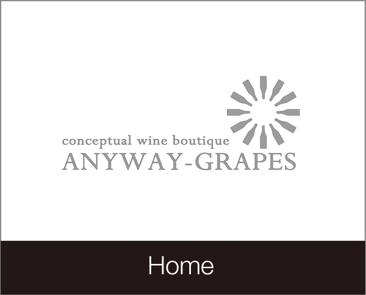

生産者情報｜ワインのAnyway-Grapes

当ページは、
小田急線の経堂駅
から徒歩3分の場所に位置するワインショップ「Conceptual Wine Boutique Anyway-Grapes」が運営する、ワイン生産者情報サイトです。
South Africa /
南アフリカ
France /
フランス
United Kingdom /
イギリス
Germany /
ドイツ
Italy /
イタリア
Rumania /
ルーマニア
Spain /
スペイン
Austria /
オーストリア
Canada /
カナダ
United States /
アメリカ合衆国
Hungary /
ハンガリー
Portugal /
ポルトガル
Croatia /
クロアチア
Australia /
オーストラリア
New Zealand /
ニュージーランド
Argentina /
アルゼンチン
Moldova /
モルドヴァ
Bulgaria /
ブルガリア
Greece /
ギリシャ
Japan /
日本